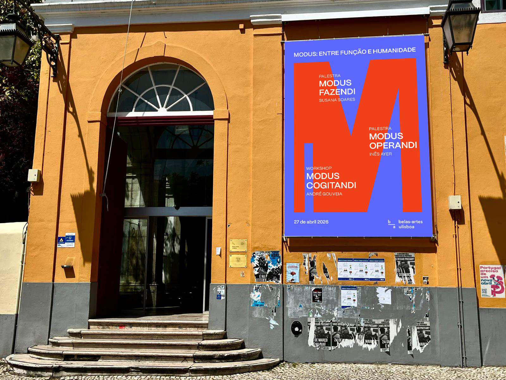
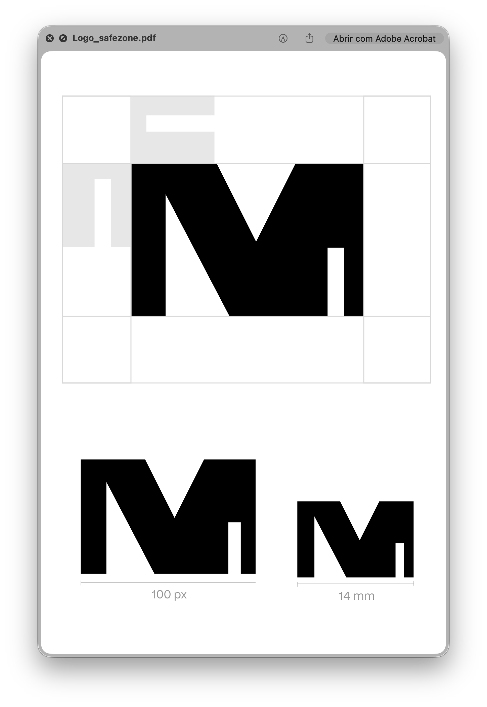

MODUS
MODUS is a fictional event created to celebrate International Design Day through a reflection on the role of design as a practical, human-centered discipline. Inspired by the handmade shepherd's spoon — an object shaped by use, not aesthetics — the event invites discussion on how design can be both rational and empathetic.
The challenge was to develop a visual identity that embodies the idea of design as function over form — a process grounded in context, need, and common sense. Drawing from the philosophy of essential, utilitarian design, the project uses minimal typography, muted colors, and a straightforward layout to reflect clarity, humility, and purpose. MODUS positions design not as decoration, but as a quiet, intelligent response to real human needs.

